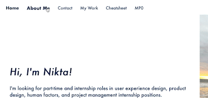

I first worked on the index HTML, I added a photo of myself and started experimenting with div blocks.
I struggled a lot with this step because in the design that I had in mind, my photo reached the right side and bottom side
of the screen. I wrote what I wanted in that page and included the photo.
Next, I moved on to the CSS portion of the index page. Here I was able to control more of the style of the page.
I changed the colors, fonts, font weight, and size of the text on screen, and introduced my first CSS transition: changing font weight
on hover.
The rest of the steps involved in making the site included repeating steps one and two for different topic pages including
About Me and Cheatsheet. The difference was that for each new webpage I had to create a new folder
that included the corresponding HTML and CSS file.
Issue
An issue I encountered was saving my file. A few times it wouldn't let me save my index.html file. I found out that I have to be on the page in Visual
Studio Code and that it will only save the page you are currently viewing.
CSS Transition
I had previously came up with a design that I want my portfolio to look like, and a couple months ago I made that idea into reality using Adobe portfolio.
This time I wanted to use HTML and what we're learning in class to accomplish the design. I played around with the different navigation bar transitions I could do,
but I finally decided that a simple bold weight effect when hovering over, and then staying bold after selected was the most fitting for my minimalistic portfolio.
I accomplished this by first creating a seperate div for the navigation bar and using a elements to reference other URLs (for each seperate page).
Most of the work came up in CSS, I called the class by doing "a.topnav", and "a.topnav a:hover" (to change the weight when the mouse is hovering on it).

Ideas and Future
In the future, I would like to add a drop down option for the navigation bar when hovering. Also,
I would like to add the option of going back to the home page or any other page. I think a better organization method
will be required in order to put in different projects.